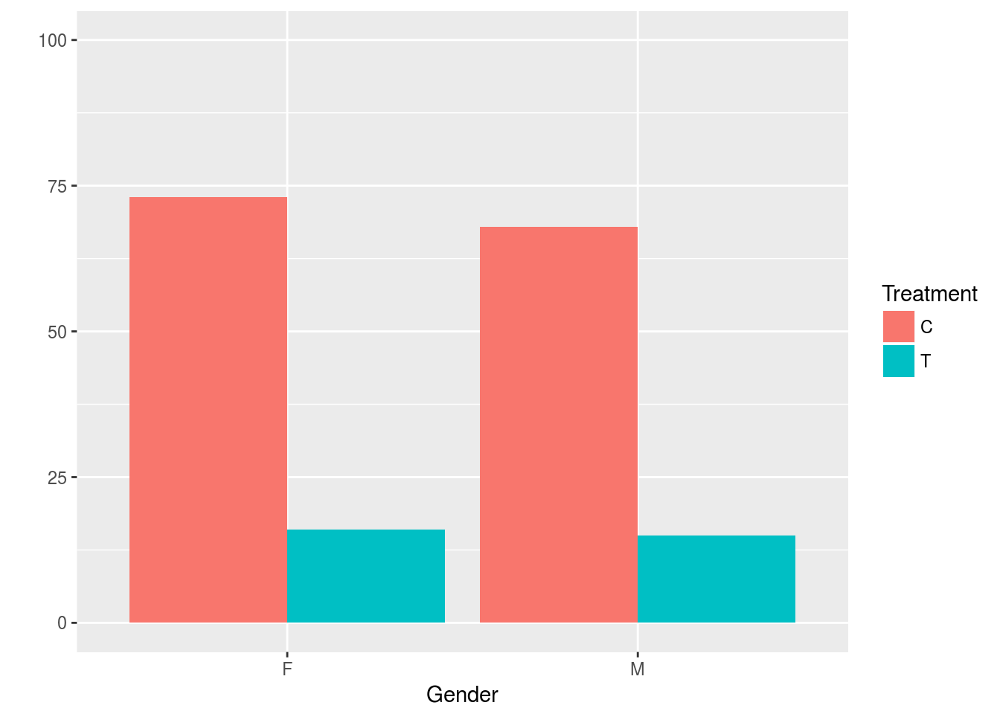
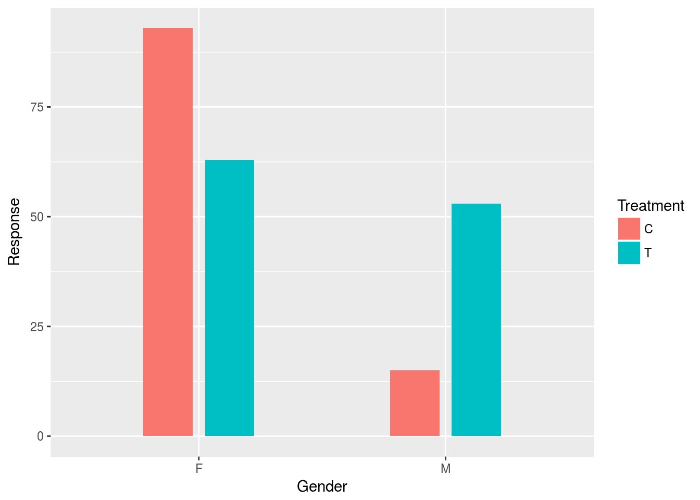
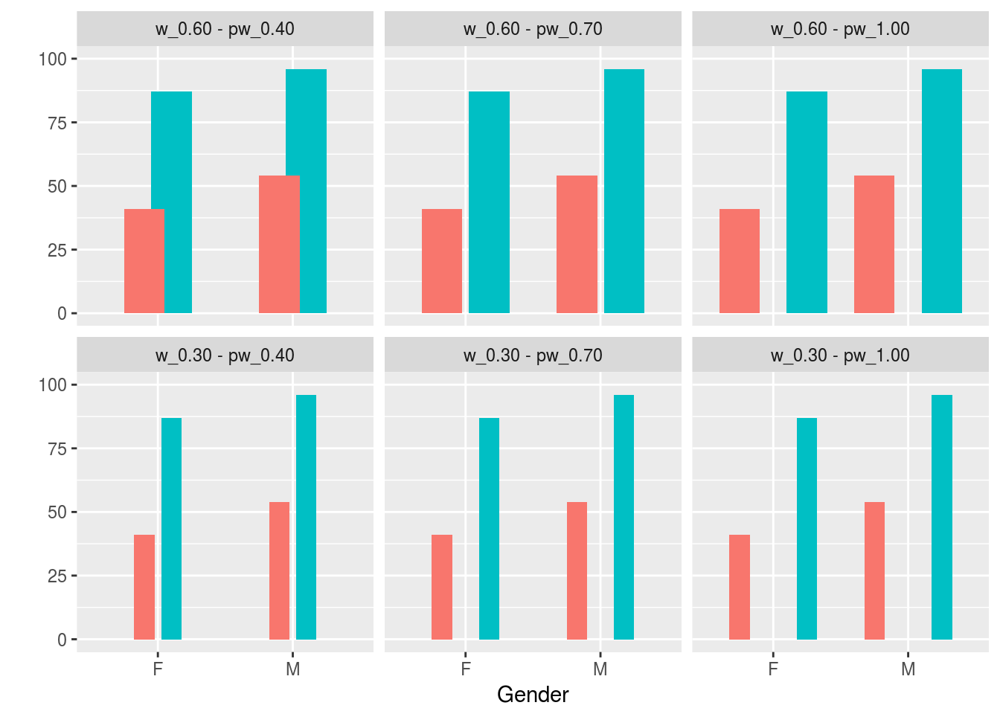
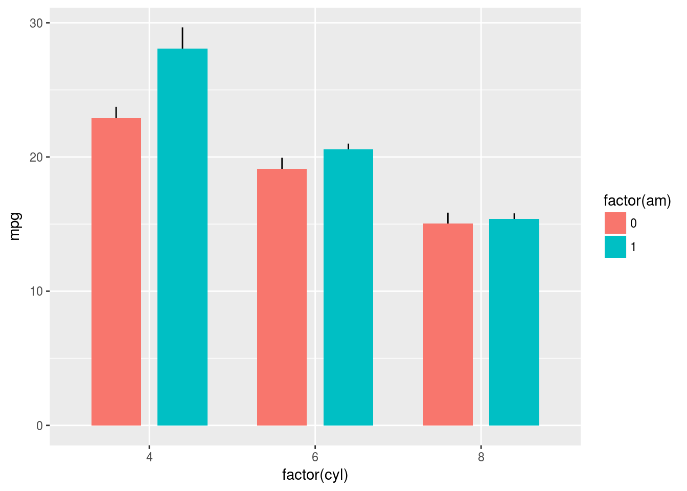

Q: 4 ggplot2でbarの間にスペースを追加する
2016/04/12追記: ggplot2 v2.1.0に対応させるため一部修正しました
4.1 Q
ヒストグラムを作る時、x軸はfactorのlevelsで並ぶと思うのですが、position = "dodge"などの場合、どうやったらbarの間のスペースを追加あるいは調整できるのでしょうか。
library(ggplot2)
Treatment <- rep(c('T','C'),each=2)
Gender <- rep(c('M','F'),2)
Response <- sample(1:100,4)
df <- data.frame(Treatment, Gender, Response)
hist <- ggplot(df, aes(x=Gender, y=Response, fill=Treatment))
hist + geom_bar(position = "dodge", stat = "identity") + scale_y_continuous(limits = c(0,
100), name = "") 
widthを使えばいいみたいですが、うまくあたりません。
4.2 A
このような設定を試してみてください:
hist + geom_bar(width = 0.4, position = position_dodge(width = 0.5))
これは2つのwidthの設定が含まれています:
geom_bar内のwidthは、barの幅を決定position_dodge内のwidthは、それぞれのbarの位置を決定
よって、最初に設定しているgeom_bar(width = 0.4)では、barの幅を0.4として設定しています。また、position_dodge(width = 0.5)では、この場合赤色と青色のbarの間隔を0.5として設定しています。
おそらく色々と説明するよりも、この2つの設定値を色々変更して試してみたほうが、あなたの理解を助けるでしょう。ぜひ色々試してみてください。
4.3 補足
※ 2015/8/7に指摘を受けましたので補足しました。berobero11さん、kohskeさんありがとうございました。
4.3.1 設定例の一覧
上と同じパターンで、2つのwidthを色々設定してみたパターンを一覧できるものを作成しました:
plot <- ggplot(df, aes(x=Gender, y=Response, fill=Treatment)) +
scale_y_continuous(limits = c(0, 100), name = "") +
theme(legend.position = "none") +
facet_wrap(~p) +
mapply(function(w, pw)
geom_bar(data = transform(df, p=sprintf("w_%.02f_pw_%.02f", w, pw)), stat = "identity", width= w, position = position_dodge(width = pw)),
w = c(0.6,0.6,0.6,0.3,0.3,0.3), pw = c(0.4,0.7,1.0,0.4,0.7,1.0))
plot
上の段がgeom_bar(width = 0.6)で、下の段がgeom_bar(width = 0.4)です。また左から順番にposition_dodge(width = c(0.4,0.7,1.0))という設定にしています。
mapplyで設定している部分については、複数のggplot2要素を関数で渡したい を参考に作成しています。
4.3.2 errorbarについて
2016/04/12追記: ggplot2 v2.1.0に対応するため修正しました。
errorbarについても、position = position_dodge(width = 0.9)のように設定できます:
ggplot(mtcars, aes(factor(cyl), mpg, fill = factor(am))) +
stat_summary(fun.data = mean_se, position = position_dodge(width = 0.9), geom = "linerange") +
stat_summary(fun.y = mean, geom = "bar", position = position_dodge(width = 0.9))この場合、最初のstat_summaryでエラーバーを設定し、次のstat_summaryでバーを設定しています。両方のposition = position_dodgge(width = )は揃えておきましょう。
(2016/04/12追記: 以下のコードでlayer()でgeom_params=やstat_params=が使えなくなり、params=に統合されたようです
ただし、stat_summaryでバーの幅を変えたい場合は面倒になります。stat_summary(width = 0.9)といった設定は反映されないからです。幅をかえるには、layerからparams = list(width = 0.6)とパラメータを指定していく方法があります:
ggplot(mtcars, aes(factor(cyl), mpg, fill = factor(am))) +
stat_summary(fun.data = mean_se, position = position_dodge(width = 0.8), geom = "linerange") +
layer(geom = "bar", params = list(width = 0.6, fun.data = mean_se), stat = "summary",
position = position_dodge(width = 0.8))
layerに関する説明は省略しますが、params=list()などはlayerに設定値を与えたものを作成します。興味がある方は、R言語上級ハンドブックのsection-54をご覧ください。
4.4 参考
この記事は、以下の記事をベースに日本語化しています:
関連する公式ヘルプトピックス